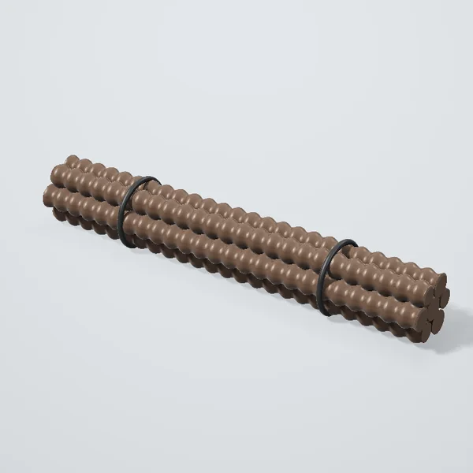
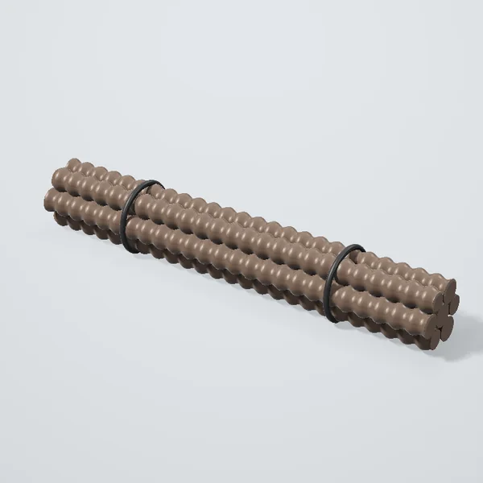
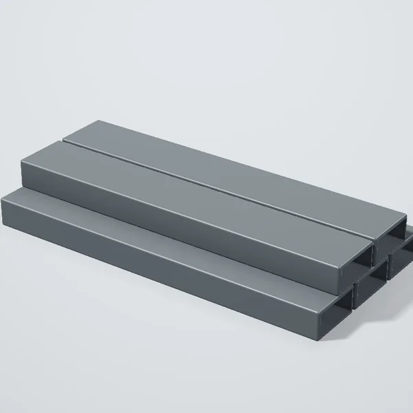

Metall prokat Toşkentda
Armatura

Armatura A500S Ø12, 11,7 m98 000 so‘mdan
Armatura A500S Ø10, 11,7 m69 000 so‘mdan- Armatura A500S Ø8, 11,7 m44 000 so‘mdan
- Armatura A500S Ø14, 11,7 m133 500 so‘mdan
- Armatura A500S Ø16, 11,7 m176 500 so‘mdan
Profil quvur

Profil quvur 40×20×2, 6 m165 000 so‘mdan- Profil quvur 60×40×2, 6 m280 500 so‘mdan
- Profil quvur 20×20×1,5, 6 m74 500 so‘mdan
- Pölat burçak 50×50×4, 6 m198 000 so‘mdan